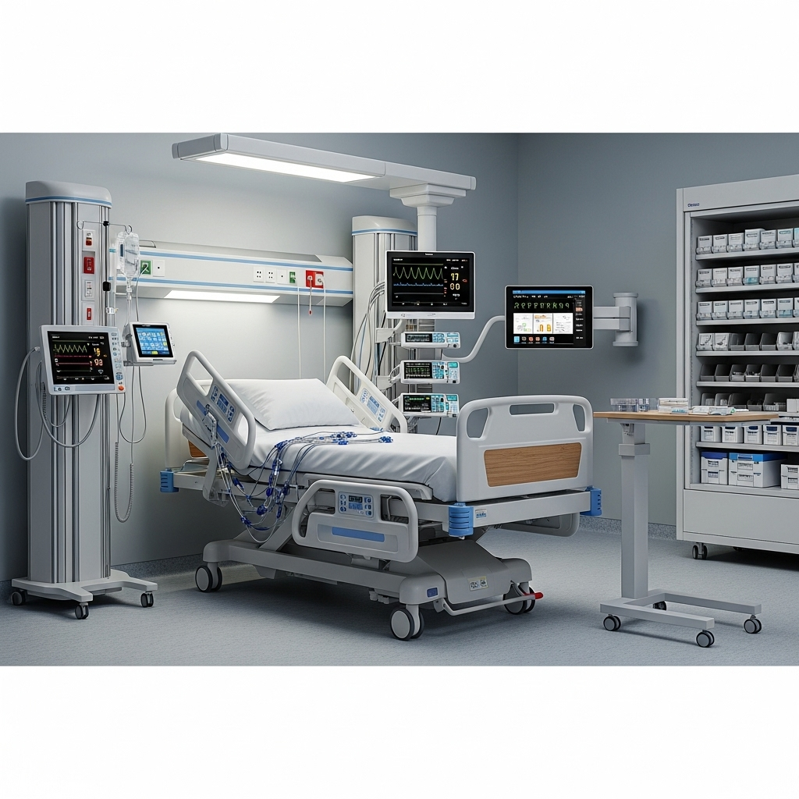

EN EL HOGAR
- Lavadoras automáticas: Controlan el ciclo de lavado, temperatura del agua y tiempo.
- Microondas: Gestionan la potencia, tiempo y sensores de humedad.
- Refrigeradoras inteligentes: Supervisan la temperatura y controlan el funcionamiento del compresor.
Todos estos usan microcontroladores programados para ejecutar funciones específicas.
EN AUTOMÓVILES
- Sistema de frenos ABS: Detecta cuando una rueda va a bloquearse y ajusta la presión del freno.
- Airbags: Se activan mediante sensores en caso de colisión.
- Sistemas de navegación GPS: Calculan rutas, muestran mapas y guían al conductor.
Los vehículos modernos pueden tener más de 70 sistemas embebidos distribuidos en distintas funciones.
EN SALUD

- Marcapasos: Dispositivo implantado que regula el ritmo cardíaco.
- Termómetros digitales: Miden la temperatura corporal y muestran el resultado.
- Monitores de signos vitales: Recolectan y procesan información del paciente en tiempo real.
EN LA INDUSTRIA
- PLC (Controlador Lógico Programable): Controla procesos industriales como bandas transportadoras o brazos robóticos.
- Sistemas de monitoreo de temperatura/presión: Usados en plantas de producción.
- Máquinas CNC: Cortadoras automáticas controladas por software embebido.
EN EDUCACIÓN Y DESARROLLO
- Placas Arduino: Usadas para enseñar programación y electrónica básica.
- ESP32 / Raspberry Pi Pico: Microcontroladores con Wi-Fi ideales para proyectos IoT.
- Kits de robótica educativa: Robots programables que ejecutan tareas específicas.
EN COMUNICACIÓN Y TECNOLOGÍA
- Relojes inteligentes (smartwatches): Controlan sensores de salud, conexión Bluetooth y pantallas.
- Cámaras de seguridad IP: Procesan imágenes, detectan movimiento y se conectan a la red.
- Routers Wi-Fi: Tienen sistemas embebidos para gestionar conexiones y tráfico de red.